PCA by hand
Five points with two features. Find the first principal component and the L2 reconstruction error of (3, 3) and (3, 4).
| n | x₁ | x₂ | x₁ − μ₁ | x₂ − μ₂ |
|---|---|---|---|---|
| 1 | −2 | −1 | −2 | −2 |
| 2 | −1 | 0 | −1 | −1 |
| 3 | 0 | 1 | 0 | 0 |
| 4 | 1 | 2 | 1 | 1 |
| 5 | 2 | 3 | 2 | 2 |
- Centre. \(\boldsymbol\mu = \tfrac15\sum_n \mathbf x_n = (0/5,\ 5/5) = (0,\ 1)\). Subtracting it gives the last two columns.
- Covariance. \(\mathbf S = \tfrac1N \mathbf X_c^\top \mathbf X_c = \tfrac15\begin{pmatrix}10 & 10\\ 10 & 10\end{pmatrix} = \begin{pmatrix}2 & 2\\ 2 & 2\end{pmatrix}\). (Using \(N-1\) instead scales \(\mathbf S\) but not its eigenvectors.)
- Eigen-decomposition. \(\det(\mathbf S - \lambda \mathbf I) = (2-\lambda)^2 - 4 = \lambda(\lambda - 4) = 0\), so \(\lambda_1 = 4,\ \lambda_2 = 0\). For \(\lambda_1 = 4\): \(-2w_1 + 2w_2 = 0 \Rightarrow w_1 = w_2\).
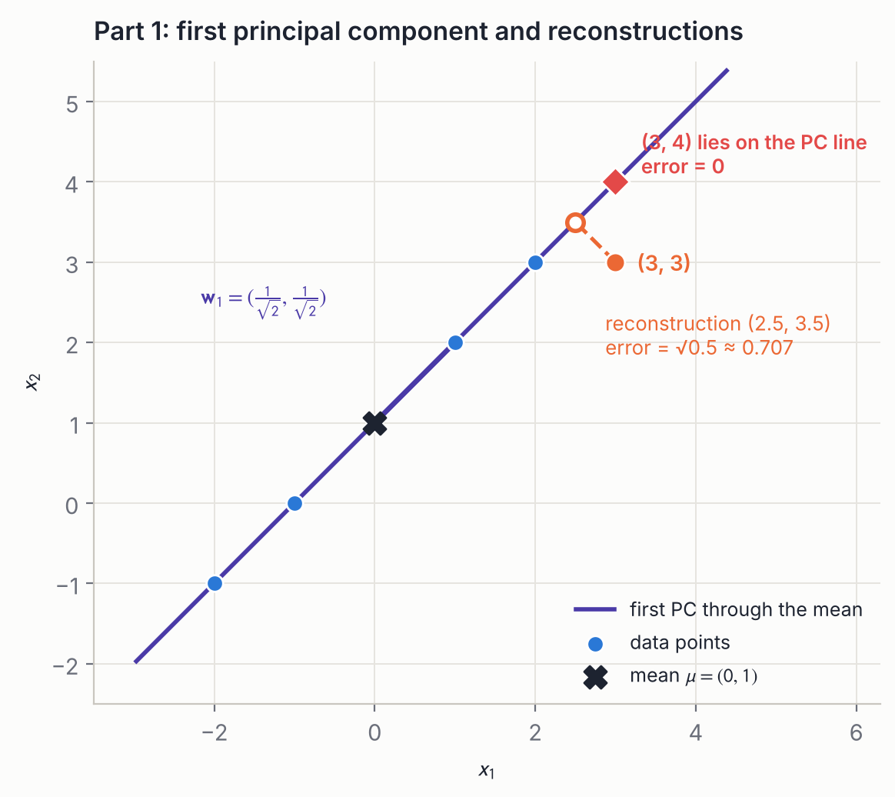
This also follows from the "minimum orthogonal distance" definition. After centring, every point is a multiple of (1, 1), so the line through \(\boldsymbol\mu\) in direction (1, 1)/√2 passes through all five points. The total orthogonal distance is 0, which no other direction can match. All of the variance (λ₁ / (λ₁ + λ₂) = 100%) lies along w₁.
Reconstructing a new point
A point \(\mathbf p\) is encoded by its coordinate along the PC and decoded back into the original space. Both steps use the training mean:
\[ z = \mathbf w_1^\top(\mathbf p - \boldsymbol\mu), \qquad \hat{\mathbf p} = \boldsymbol\mu + z\,\mathbf w_1, \qquad e = \lVert \mathbf p - \hat{\mathbf p}\rVert_2 = \big|\mathbf w_2^\top(\mathbf p - \boldsymbol\mu)\big| . \]
2 · Point (3, 3)
\[ \begin{aligned} \mathbf p - \boldsymbol\mu &= (3,\ 3) - (0,\ 1) = (3,\ 2) \\ z &= \tfrac{1}{\sqrt2}(3 + 2) = \tfrac{5}{\sqrt2} = 3.5355 \\ \hat{\mathbf p} &= (0,\ 1) + \tfrac{5}{\sqrt2}\cdot\tfrac{1}{\sqrt2}(1,\ 1) = (2.5,\ 3.5) \\ \mathbf p - \hat{\mathbf p} &= (0.5,\ -0.5) \\ e &= \sqrt{0.5^2 + 0.5^2} = \sqrt{0.5} = \tfrac{1}{\sqrt2} \approx \mathbf{0.7071} \end{aligned} \]
Check with PC2: \(|\tfrac{1}{\sqrt2}(-3 + 2)| = 1/\sqrt2\). ✓
3 · Point (3, 4)
\[ \begin{aligned} \mathbf p - \boldsymbol\mu &= (3,\ 4) - (0,\ 1) = (3,\ 3) \\ z &= \tfrac{1}{\sqrt2}(3 + 3) = \tfrac{6}{\sqrt2} = 4.2426 \\ \hat{\mathbf p} &= (0,\ 1) + \tfrac{6}{\sqrt2}\cdot\tfrac{1}{\sqrt2}(1,\ 1) = (3,\ 4) \\ \mathbf p - \hat{\mathbf p} &= (0,\ 0) \\ e &= \mathbf{0} \end{aligned} \]
Check with PC2: \(|\tfrac{1}{\sqrt2}(-3 + 3)| = 0\). ✓ (3, 4) satisfies x₂ = x₁ + 1, so it lies on the PC line.
pca_by_hand: numerical check of Part 1
def pca_by_hand(X=None, queries=((3, 3), (3, 4))):
"""
First principal component of a small 2-D dataset and the L2
reconstruction error of new points, following the hand calculation:
1. centre the data with the sample mean
2. covariance matrix S = (1/N) Xc^T Xc
3. first PC = unit eigenvector of S with the largest eigenvalue
4. a point p is reconstructed as mu + ((p - mu) . w) w
"""
if X is None:
X = np.array([[-2, -1], [-1, 0], [0, 1], [1, 2], [2, 3]], dtype=float)
mu = X.mean(axis=0)
Xc = X - mu
S = Xc.T @ Xc / len(X)
evals, evecs = np.linalg.eigh(S) # ascending order
w = evecs[:, -1]
w = w * np.sign(w[np.argmax(np.abs(w))]) # fix the sign so the largest entry is positive
out = {"mean": mu, "S": S, "eigenvalues": evals[::-1], "w1": w, "queries": []}
for q in queries:
p = np.asarray(q, dtype=float)
z = (p - mu) @ w # 1-D code (coordinate along the PC)
p_hat = mu + z * w # reconstruction
out["queries"].append({"point": p, "centred": p - mu, "z": z, "recon": p_hat,
"residual": p - p_hat, "error": float(np.linalg.norm(p - p_hat))})
return outMarginal views of the Iris data
Project the 4-D data onto one, two or three of the original feature axes (dropping the rest) and look for species clusters.
2.1Data and how clusters are measured
The UCI Iris archive contains 150 flowers, 50 each of setosa,
versicolor and virginica, each with four measurements in cm.
The archive ships two copies: iris.data has two known transcription errors (samples 35 and 38), and
bezdekIris.data is the corrected version that matches Fisher's paper. I use the corrected file; it is identical to the copy bundled with scikit-learn.
To judge "nice clusters" with numbers as well as by eye, every view is scored two ways:
- Fisher ratio \(J = \operatorname{tr}(\mathbf S_B) / \operatorname{tr}(\mathbf S_W)\): the spread between species means divided by the spread inside each species. Large \(J\) means tight, well separated groups.
- Leave-one-out 5-NN accuracy: each flower is classified by its 5 nearest neighbours among the other 149 in that view. This shows whether the species can still be told apart.
2.2One feature
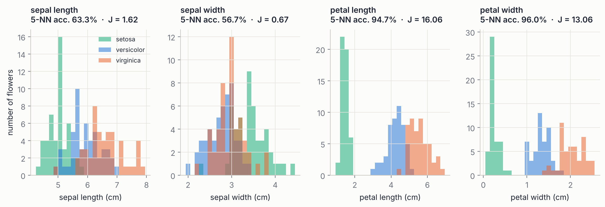
The petal measurements alone already split the data. Setosa petal length is 1.0 to 1.9 cm while the other two species start at 3.0 cm, and setosa petal width is at most 0.6 cm against at least 1.0 cm for versicolor. Versicolor and virginica overlap for petal length 4.5 to 5.1 cm and petal width 1.4 to 1.8 cm. The sepal features overlap heavily for all three species: sepal width has \(J = 0.67\) and only 56.7% 5-NN accuracy.
2.3Two features
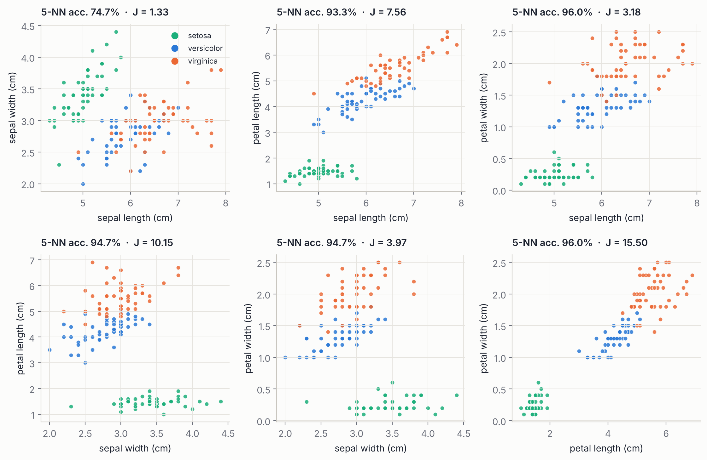
Every pair that contains a petal feature isolates setosa as its own cluster. Petal length + petal width (bottom right) gives the cleanest picture: three groups along one diagonal, setosa far away and versicolor and virginica touching only at their boundary (\(J = 15.5\), 96.0%). Sepal length + sepal width (top left) is the only pair with no clean structure. Setosa forms a separate group in the upper left, but versicolor and virginica are fully mixed (74.7%).
2.4Three features
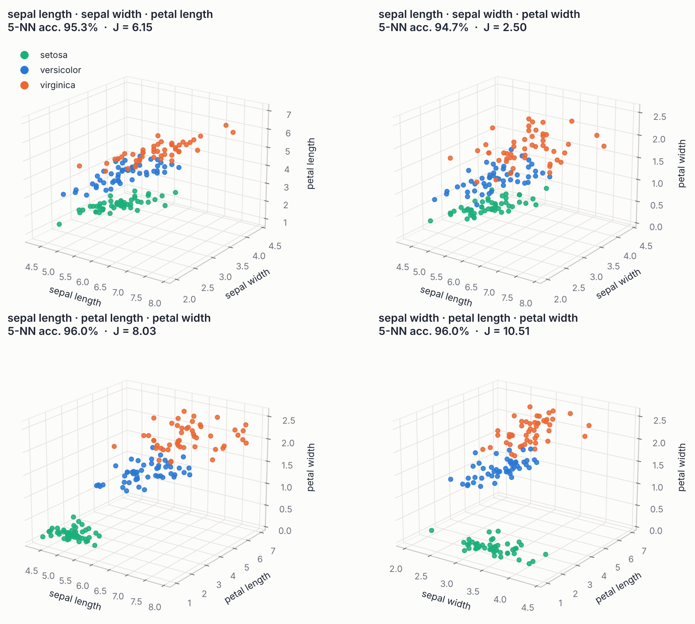
Three axes do not reveal anything that two petal axes did not. The best 3-D views (any triple containing both petal features) reach 96.0%, the same as the petal pair alone. Adding a sepal feature lowers \(J\) (15.5 → 10.5 or 8.0), because the sepal axes add spread within each species without separating the species further.
2.5Which marginal views give nice clusters?
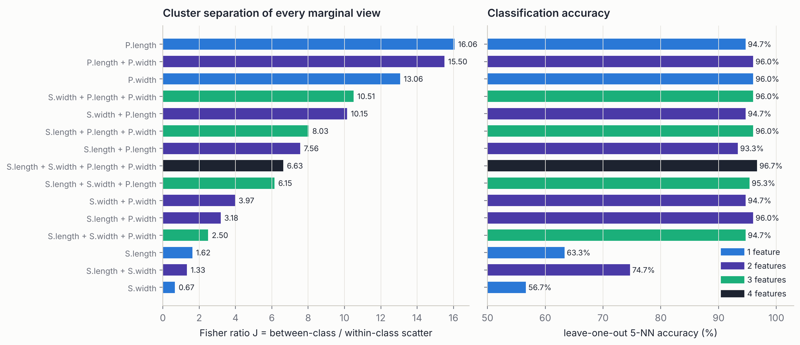
| features | view | Fisher ratio J | 5-NN accuracy |
|---|---|---|---|
| 1 | petal length | 16.06 | 94.7% |
| 2 | petal length + petal width | 15.50 | 96.0% |
| 1 | petal width | 13.06 | 96.0% |
| 3 | sepal width + petal length + petal width | 10.51 | 96.0% |
| 2 | sepal width + petal length | 10.15 | 94.7% |
| 3 | sepal length + petal length + petal width | 8.03 | 96.0% |
| 2 | sepal length + petal length | 7.56 | 93.3% |
| 4 | sepal length + sepal width + petal length + petal width | 6.63 | 96.7% |
| 3 | sepal length + sepal width + petal length | 6.15 | 95.3% |
| 2 | sepal width + petal width | 3.97 | 94.7% |
| 2 | sepal length + petal width | 3.18 | 96.0% |
| 3 | sepal length + sepal width + petal width | 2.50 | 94.7% |
| 1 | sepal length | 1.62 | 63.3% |
| 2 | sepal length + sepal width | 1.33 | 74.7% |
| 1 | sepal width | 0.67 | 56.7% |
- Yes: petal length, petal width and the pair of them. These views produce three compact clusters. Setosa is perfectly separated, and versicolor and virginica overlap only slightly. Petal length alone has the highest Fisher ratio of all 15 views (16.1), and the petal pair is close behind (15.5).
- Setosa is easy, the other two are not. Setosa can be separated with a straight line in every view that includes a petal feature. Versicolor and virginica are never fully separated in any marginal view. In every petal-based view all of the misclassified flowers (5 to 8) are versicolor or virginica flowers at that boundary; no setosa is ever misclassified.
- More features is not automatically better. Using all four features gives 96.7%, only one flower better than petal width alone (96.0%), and a lower Fisher ratio (6.6). Almost all of the species information is in the two petal measurements. The data are effectively low-dimensional, which suggests PCA will work well.
marginal_separability, fisher_ratio, loo_knn_accuracy
def loo_knn_accuracy(Z, y, k=5):
"""Leave-one-out accuracy of a k-NN classifier: a simple measure of how
well separated the classes are in the representation Z."""
clf = KNeighborsClassifier(n_neighbors=k)
return float(cross_val_score(clf, Z, y, cv=LeaveOneOut()).mean())
def fisher_ratio(Z, y):
"""Between-class scatter / within-class scatter (trace ratio).
Large values mean tight, well separated clusters."""
mu = Z.mean(axis=0)
sb = sum((y == c).sum() * np.sum((Z[y == c].mean(axis=0) - mu) ** 2) for c in np.unique(y))
sw = sum(np.sum((Z[y == c] - Z[y == c].mean(axis=0)) ** 2) for c in np.unique(y))
return float(sb / sw)
def marginal_separability(X, y, k=5):
"""Score every subset of 1 to 4 features (the marginal views)."""
rows = []
for r in (1, 2, 3, 4):
for idx in itertools.combinations(range(X.shape[1]), r):
Z = X[:, idx]
rows.append({"features": [FEATURES[i] for i in idx], "idx": list(idx),
"loo_knn": loo_knn_accuracy(Z, y, k), "fisher": fisher_ratio(Z, y)})
return rowsPrincipal component analysis
PCA on the centred 150 × 4 data matrix. All four features are in the same unit (cm), so they are not rescaled; see the note at the end of 3.1.
3.1The principal axes
With the centred data \(\mathbf X_c = \mathbf X - \mathbf 1\boldsymbol\mu^\top\) and its SVD \(\mathbf X_c = \mathbf U\boldsymbol\Sigma\mathbf V^\top\), the columns of
\(\mathbf V\) are the principal axes, \(\mathbf X_c\mathbf V\) are the scores, and the variance along axis \(i\) is \(\sigma_i^2/(N-1)\).
I compute this directly with NumPy and check it against sklearn.decomposition.PCA; the two agree to 1e-13.
The mean is \(\boldsymbol\mu = (5.843,\ 3.057,\ 3.758,\ 1.199)\) cm.
| axis | sepal length | sepal width | petal length | petal width | variance (cm²) | % of total |
|---|---|---|---|---|---|---|
| PC1 | +0.361 | −0.085 | +0.857 | +0.358 | 4.2282 | 92.46% |
| PC2 | +0.657 | +0.730 | −0.173 | −0.075 | 0.2427 | 5.31% |
| PC3 | −0.582 | +0.598 | +0.076 | +0.546 | 0.0782 | 1.71% |
| PC4 | +0.315 | −0.320 | −0.480 | +0.754 | 0.0238 | 0.52% |
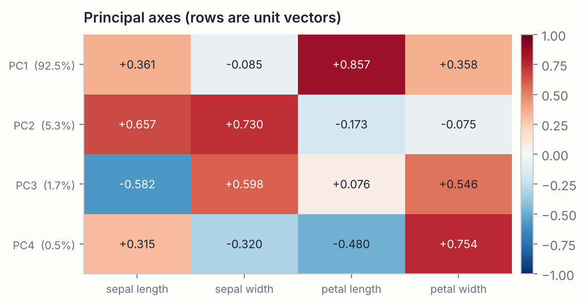
- PC1 ≈ overall flower size, dominated by petal length (loading +0.857, plus about +0.36 each for sepal length and petal width). Petal length also has by far the largest variance of the four features (3.12 cm² of the 4.57 total), so PC1 mostly follows it. Setosa has small petals and sits at the negative end.
- PC2 ≈ sepal size, especially sepal width (+0.730) and sepal length (+0.657), and nearly independent of the petals.
- PC3 and PC4 are contrasts between features and carry only 1.7% and 0.5% of the variance.
Standardising? If each feature is first scaled to unit variance, PC1 explains only 73.0% and the 2-D 5-NN accuracy falls from 96.7% to 91.3%. Scaling inflates sepal width, the noisiest and least informative feature, to the same weight as the petals. Since all features share one unit, the unscaled covariance is the better choice here.
pca_svd and the scikit-learn check
def pca_svd(X):
"""
PCA from the SVD of the centred data matrix Xc = U Sigma V^T.
Rows of V^T are the principal axes; Xc V are the scores;
the variance along PC i is sigma_i^2 / (N - 1).
"""
mu = X.mean(axis=0)
Xc = X - mu
U, s, Vt = np.linalg.svd(Xc, full_matrices=False)
# same sign convention as scikit-learn (largest |loading| of each axis positive)
signs = np.sign(Vt[np.arange(len(s)), np.argmax(np.abs(Vt), axis=1)])
Vt = Vt * signs[:, None]
scores = Xc @ Vt.T
return {"mean": mu, "singular_values": s, "components": Vt, "scores": scores,
"variance": s ** 2 / (len(X) - 1)}
def pca_sklearn(X, n_components=None):
"""The same decomposition with scikit-learn, used as a check."""
p = PCA(n_components=n_components).fit(X)
return p, p.transform(X)3.2The data marginalised on 1, 2 and 3 principal axes
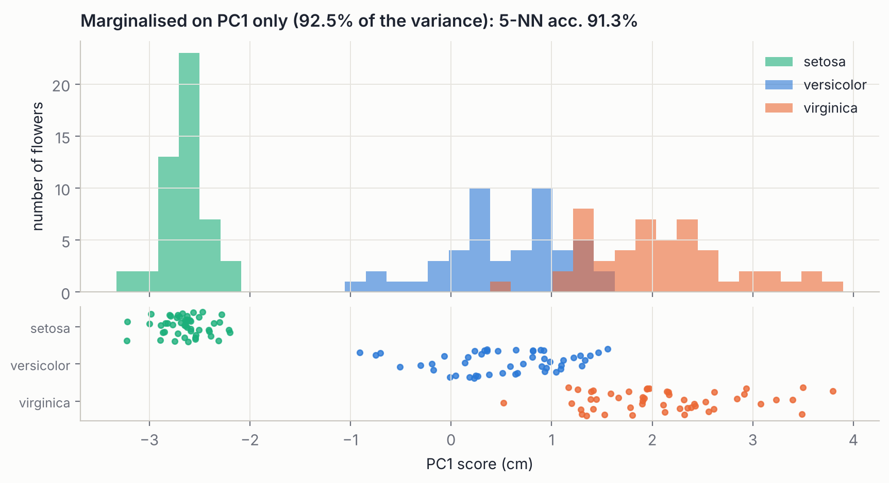
Major axis only. One number per flower already separates setosa (PC1 from -3.22 to -2.20) from the others (versicolor starts at -0.91). Versicolor and virginica overlap between 0.52 and 1.56. 5-NN accuracy is 91.3%. PC1 has a high Fisher ratio (13.2) because it is the direction of largest spread, and that spread is mainly the gap between species.
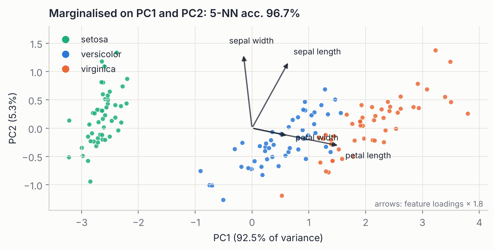
Top two axes. Adding PC2 lifts accuracy to 96.7%, the same as using all four original features, with half the numbers. The biplot shows the petal arrows lying almost along PC1 and the sepal arrows pointing up along PC2. Versicolor and virginica are split mainly by PC1, which means by petal size.
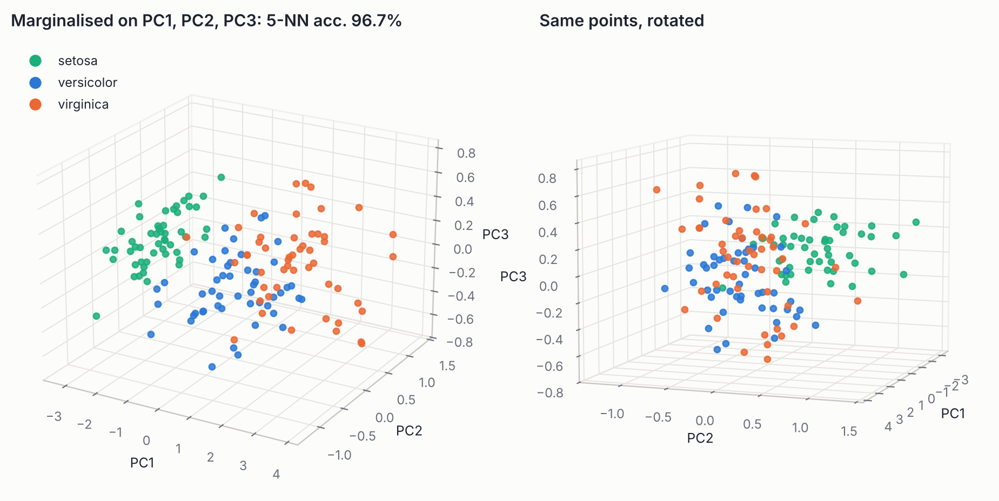
Top three axes. PC3 adds little spread (−0.69 to 0.76 cm, against −3.22 to 3.80 cm on PC1) and no extra separation. Accuracy stays at 96.7%. The 3-D cloud is essentially a flat sheet, which agrees with the variance numbers in Part 4.
Data compression
How much of the dataset survives when it is described by k principal components instead of 4 features?
For the centred matrix, the squared Frobenius norm is the total sum of squares, which equals the sum of the squared singular values and \(N-1\) times the total variance:
\[ \lVert\mathbf X_c\rVert_F^2 = \sum_{n,d} x_{nd}^2 = \operatorname{tr}(\mathbf X_c^\top\mathbf X_c) = \sum_{i=1}^{4}\sigma_i^2 = (N-1)\sum_i \lambda_i . \]
Projecting onto the first \(k\) axes and reconstructing gives \(\hat{\mathbf X}_c = \mathbf X_c\mathbf V_k\mathbf V_k^\top\). By orthogonality the error is exactly the discarded part:
\[ \lVert\mathbf X_c - \mathbf X_c\mathbf V_k\mathbf V_k^\top\rVert_F^2 = \sum_{i>k}\sigma_i^2 , \qquad \text{variance explained}(k) = \frac{\sum_{i\le k}\sigma_i^2}{\lVert\mathbf X_c\rVert_F^2} . \]
For Iris: \(\lVert\mathbf X_c\rVert_F^2 = 681.37\ \text{cm}^2\), and the squared singular values are \(\sigma_i^2 = 630.01,\ 36.16,\ 11.65,\ 3.55\) (they add to 681.37).
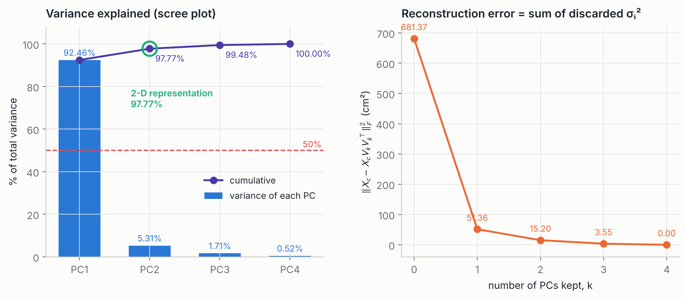
| PCs kept k | Σ σᵢ² kept (cm²) | ‖X_c − X̂_c‖²_F (cm²) | variance explained |
|---|---|---|---|
| 0 | 0.00 | 681.37 | 0.00% |
| 1 | 630.01 | 51.36 | 92.46% |
| 2 | 666.17 | 15.20 | 97.77% |
| 3 | 677.82 | 3.55 | 99.48% |
| 4 | 681.37 | 0.00 | 100.00% |
variance_explained: Frobenius norm and reconstruction error
def variance_explained(X):
"""
For a centred matrix Xc, ||Xc||_F^2 = trace(Xc^T Xc) = sum_i sigma_i^2,
which is (N - 1) times the total variance. Keeping k PCs leaves the
reconstruction error ||Xc - Xc V_k V_k^T||_F^2 = sum_{i>k} sigma_i^2,
so the fraction of variance explained by k PCs is
sum_{i<=k} sigma_i^2 / ||Xc||_F^2.
"""
Xc = X - X.mean(axis=0)
fro2 = float(np.sum(Xc ** 2))
s = np.linalg.svd(Xc, compute_uv=False)
Vt = np.linalg.svd(Xc, full_matrices=False)[2]
ratio = s ** 2 / fro2
recon = []
for k in range(len(s) + 1):
Vk = Vt[:k].T
R = Xc - Xc @ Vk @ Vk.T
recon.append(float(np.sum(R ** 2)))
cum = np.cumsum(ratio)
return {"fro2": fro2, "singular_values": s, "sigma2": s ** 2, "ratio": ratio,
"cumulative": cum, "recon_error_fro2": recon,
"pcs_for_50": int(np.searchsorted(cum, 0.5) + 1),
"pcs_for_95": int(np.searchsorted(cum, 0.95) + 1)}Non-linear components: ISOMAP
ISOMAP replaces straight-line distances with distances measured along a k-nearest-neighbour graph, then embeds those geodesic distances in 2-D with MDS.
- Connect every flower to its k = 3 nearest neighbours (edge length = Euclidean distance).
- Geodesic distance between two flowers = length of the shortest path through this graph (Dijkstra).
- Find 2-D points whose pairwise distances match the geodesic distances as closely as possible (MDS).
sklearn.manifold.Isomap performs step 3 with classical MDS, a closed-form eigendecomposition. The handout describes fitting MDS by
gradient descent, so I also passed the same geodesic distance matrix to sklearn.manifold.MDS, which minimises the stress iteratively (SMACOF).
Both are shown.
5.1A 3-NN graph on Iris falls apart
With only 3 neighbours the graph has 2 connected components: the 50 setosa flowers, and the 100 versicolor and virginica flowers. Geodesic distances between the two groups are infinite, so scikit-learn joins them by adding the single shortest edge between the groups. That edge runs from flower 24 (5.1, 3.3, 1.7, 0.5) to flower 99 (5.1, 2.5, 3, 1.1), with length 1.64 cm. Every setosa to non-setosa path now goes through this one bridge, so geodesic distances across species are much longer than straight-line ones: setosa to virginica averages 7.67 cm along the graph against 4.82 cm directly.
5.2Embeddings
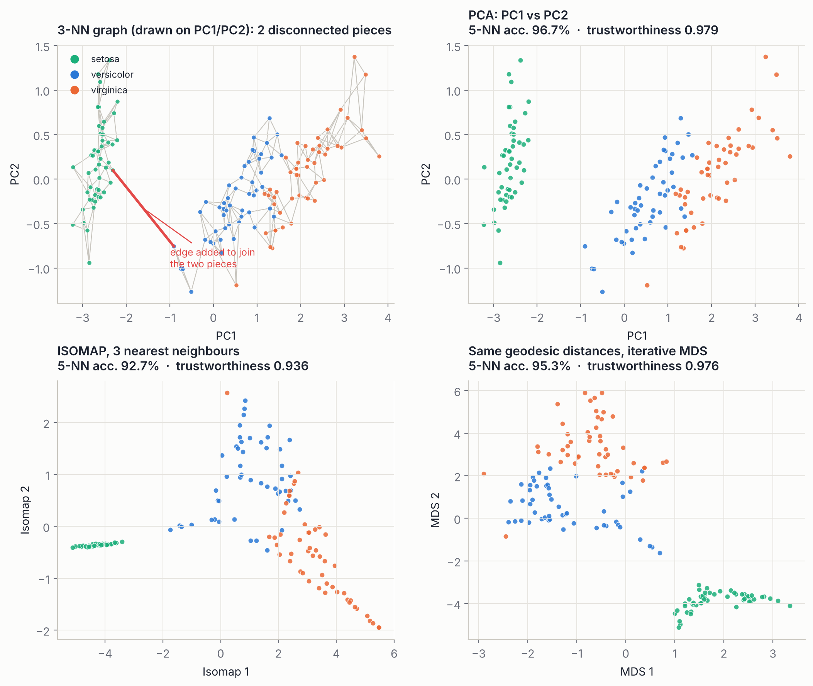
The ISOMAP picture looks very different from PCA. Setosa collapses into a thin strand far to one side. Versicolor and virginica are unrolled along a bent path that follows the chain of nearest neighbours, and the two species form arms that meet in the middle. The SMACOF version fits the same distances but arranges the groups differently: MDS solutions are only defined up to rotation and reflection, and the iterative fit settles in a different local minimum of the stress.
5.3PCA or ISOMAP?
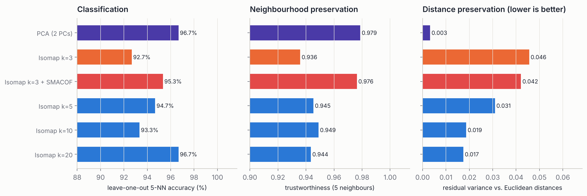
| 2-D embedding | 5-NN accuracy | Fisher ratio | trustworthiness | resid. var. (Eucl.) | resid. var. (geod.) |
|---|---|---|---|---|---|
| PCA (2 PCs) | 96.7% | 7.83 | 0.979 | 0.003 | 0.042 |
| Isomap k=3 | 92.7% | 8.17 | 0.936 | 0.046 | 0.016 |
| Isomap k=3 + SMACOF | 95.3% | 7.18 | 0.976 | 0.042 | 0.011 |
| Isomap k=5 | 94.7% | 8.61 | 0.945 | 0.031 | 0.026 |
| Isomap k=10 | 93.3% | 11.07 | 0.949 | 0.019 | 0.029 |
| Isomap k=20 | 96.7% | 11.33 | 0.944 | 0.017 | 0.031 |
Trustworthiness (1 = perfect) checks whether a flower's nearest neighbours in 2-D are also near it in 4-D. Residual variance is \(1 - R^2\) between the original distances and the 2-D distances, the measure used in the original ISOMAP paper; 0 is perfect.
- Classification. 2-D PCA keeps a 5-NN accuracy of 96.7%, the same as all four raw features. ISOMAP with 3 neighbours drops to 92.7% (95.3% with SMACOF). Its slightly higher Fisher ratio (8.17 vs 7.83) comes from pushing setosa further away, which does not help with the hard versicolor and virginica boundary.
- Compression. PCA is a linear map with an exact inverse: two numbers per flower reconstruct all four measurements with 97.8% of the variance kept (0.32 cm RMS error), and a new flower is encoded with one matrix product. ISOMAP has no decoder, so the original measurements cannot be recovered. It also cannot place a new flower without rebuilding the graph or using an approximation, and it needs all \(N^2\) geodesic distances. PCA preserves the original distances almost perfectly (residual variance 0.003 vs 0.046) and also preserves neighbourhoods better (trustworthiness 0.979 vs 0.936).
- Robustness. With k = 3 the result depends on one bridge edge and on the exact neighbour chains. Changing k moves the accuracy between 92.7% and 96.7% with no steady trend, while PCA has no tuning parameter.
- Why. ISOMAP pays off when the data lie on a curved, densely sampled manifold, such as a "Swiss roll", where straight-line distances cut across the fold. Iris is the opposite case: 92.5% of the variance lies on one straight axis, the species form compact blobs rather than a curved sheet, and 150 points in 4-D are too few for 3-neighbour geodesics to estimate a manifold reliably. The motivation in the handout (Euclidean distances between very different plants are not meaningful) is reasonable in general, but for these three closely related species the Euclidean structure is already informative.
isomap_embedding, isomap_smacof, knn_graph_components
def knn_graph_components(X, k=3):
"""Number of connected pieces of the (symmetrised) k-NN graph."""
G = kneighbors_graph(X, k, mode="distance")
n, labels = connected_components(G, directed=False)
return n, labels
def isomap_embedding(X, k=3, n_components=2):
"""
ISOMAP: k-NN graph -> geodesic (shortest-path) distances -> MDS.
scikit-learn's Isomap performs the final MDS step in closed form
(classical MDS = eigendecomposition of the double-centred squared
geodesic distances). If the k-NN graph is disconnected it joins the
pieces with their shortest Euclidean edge before computing paths.
"""
iso = Isomap(n_neighbors=k, n_components=n_components)
Z = iso.fit_transform(X)
return iso, Z
def isomap_smacof(iso, n_components=2, seed=0):
"""
The variant described in the handout: take the geodesic distance matrix
computed by Isomap and fit metric MDS iteratively (SMACOF, an iterative
stress-minimisation method closely related to gradient descent).
"""
D = iso.dist_matrix_
mds = MDS(n_components=n_components, dissimilarity="precomputed", metric=True,
n_init=4, max_iter=1000, random_state=seed, normalized_stress="auto")
Z = mds.fit_transform(D)
return mds, Zcompare_embeddings and residual_variance
def residual_variance(D_target, Z):
"""1 - R^2 between the target distances and the distances in the embedding
(the measure used in the original ISOMAP paper; lower is better)."""
d_emb = pdist(Z)
d_tgt = squareform(D_target, checks=False)
r = np.corrcoef(d_tgt, d_emb)[0, 1]
return float(1 - r ** 2)
def compare_embeddings(X, y, embeddings, k_eval=5):
"""
Score 2-D embeddings on
- LOO k-NN accuracy (can the species still be classified?)
- Fisher ratio (how tight and separated are the clusters?)
- trustworthiness (are the 2-D neighbours real neighbours in 4-D?)
- residual variance against Euclidean and against geodesic distances.
"""
D_euc = squareform(pdist(X))
iso_geo = Isomap(n_neighbors=3, n_components=2).fit(X).dist_matrix_
out = {}
for name, Z in embeddings.items():
out[name] = {"loo_knn": loo_knn_accuracy(Z, y, k_eval),
"fisher": fisher_ratio(Z, y),
"trustworthiness": float(trustworthiness(X, Z, n_neighbors=k_eval)),
"resid_var_euclid": residual_variance(D_euc, Z),
"resid_var_geodesic": residual_variance(iso_geo, Z)}
return outPython code
Two files. pca_iris.py holds every computation used above. make_figures.py runs them, draws every figure on this page and writes
results.json. Run python3 make_figures.py with bezdekIris.data (from the UCI Iris archive) in the same folder.
Source files: pca_iris.py · make_figures.py · results.json.
pca_iris.py: complete module
"""
SYDE 572 - Assignment 3
PCA by hand, marginal views of Iris, PCA, data compression and Isomap.
Functions
pca_by_hand Part 1 (the 5-point dataset)
load_iris_uci Parts 2 to 5
marginal_separability Part 2 (how well each feature subset separates the species)
pca_svd Part 3 (PCA from the SVD of the centred data matrix)
variance_explained Part 4 (Frobenius norm and explained variance)
isomap_embedding Part 5 (ISOMAP with k nearest neighbours)
compare_embeddings Part 5 (PCA vs ISOMAP: compression and classification)
"""
import itertools
import os
import numpy as np
from scipy.sparse.csgraph import connected_components, shortest_path
from scipy.spatial.distance import pdist, squareform
from sklearn.decomposition import PCA
from sklearn.manifold import MDS, Isomap, trustworthiness
from sklearn.model_selection import LeaveOneOut, cross_val_score
from sklearn.neighbors import KNeighborsClassifier, kneighbors_graph
HERE = os.path.dirname(os.path.abspath(__file__))
DATA_FILE = os.path.join(HERE, "bezdekIris.data")
FEATURES = ["sepal length", "sepal width", "petal length", "petal width"]
SPECIES = ["setosa", "versicolor", "virginica"]
# ================================================================ Part 1 ====
def pca_by_hand(X=None, queries=((3, 3), (3, 4))):
"""
First principal component of a small 2-D dataset and the L2
reconstruction error of new points, following the hand calculation:
1. centre the data with the sample mean
2. covariance matrix S = (1/N) Xc^T Xc
3. first PC = unit eigenvector of S with the largest eigenvalue
4. a point p is reconstructed as mu + ((p - mu) . w) w
"""
if X is None:
X = np.array([[-2, -1], [-1, 0], [0, 1], [1, 2], [2, 3]], dtype=float)
mu = X.mean(axis=0)
Xc = X - mu
S = Xc.T @ Xc / len(X)
evals, evecs = np.linalg.eigh(S) # ascending order
w = evecs[:, -1]
w = w * np.sign(w[np.argmax(np.abs(w))]) # fix the sign so the largest entry is positive
out = {"mean": mu, "S": S, "eigenvalues": evals[::-1], "w1": w, "queries": []}
for q in queries:
p = np.asarray(q, dtype=float)
z = (p - mu) @ w # 1-D code (coordinate along the PC)
p_hat = mu + z * w # reconstruction
out["queries"].append({"point": p, "centred": p - mu, "z": z, "recon": p_hat,
"residual": p - p_hat, "error": float(np.linalg.norm(p - p_hat))})
return out
# ============================================================ Iris data ====
def load_iris_uci(path=DATA_FILE):
"""
Read the UCI Iris file (comma separated: 4 measurements in cm, species).
bezdekIris.data is the corrected file in the UCI archive; it matches
Fisher's published table (samples 35 and 38 are fixed).
"""
X, y = [], []
with open(path) as fh:
for line in fh:
parts = line.strip().split(",")
if len(parts) != 5:
continue
X.append([float(v) for v in parts[:4]])
y.append(SPECIES.index(parts[4].replace("Iris-", "")))
return np.array(X), np.array(y)
# ================================================================ Part 2 ====
def loo_knn_accuracy(Z, y, k=5):
"""Leave-one-out accuracy of a k-NN classifier: a simple measure of how
well separated the classes are in the representation Z."""
clf = KNeighborsClassifier(n_neighbors=k)
return float(cross_val_score(clf, Z, y, cv=LeaveOneOut()).mean())
def fisher_ratio(Z, y):
"""Between-class scatter / within-class scatter (trace ratio).
Large values mean tight, well separated clusters."""
mu = Z.mean(axis=0)
sb = sum((y == c).sum() * np.sum((Z[y == c].mean(axis=0) - mu) ** 2) for c in np.unique(y))
sw = sum(np.sum((Z[y == c] - Z[y == c].mean(axis=0)) ** 2) for c in np.unique(y))
return float(sb / sw)
def marginal_separability(X, y, k=5):
"""Score every subset of 1 to 4 features (the marginal views)."""
rows = []
for r in (1, 2, 3, 4):
for idx in itertools.combinations(range(X.shape[1]), r):
Z = X[:, idx]
rows.append({"features": [FEATURES[i] for i in idx], "idx": list(idx),
"loo_knn": loo_knn_accuracy(Z, y, k), "fisher": fisher_ratio(Z, y)})
return rows
# ================================================================ Part 3 ====
def pca_svd(X):
"""
PCA from the SVD of the centred data matrix Xc = U Sigma V^T.
Rows of V^T are the principal axes; Xc V are the scores;
the variance along PC i is sigma_i^2 / (N - 1).
"""
mu = X.mean(axis=0)
Xc = X - mu
U, s, Vt = np.linalg.svd(Xc, full_matrices=False)
# same sign convention as scikit-learn (largest |loading| of each axis positive)
signs = np.sign(Vt[np.arange(len(s)), np.argmax(np.abs(Vt), axis=1)])
Vt = Vt * signs[:, None]
scores = Xc @ Vt.T
return {"mean": mu, "singular_values": s, "components": Vt, "scores": scores,
"variance": s ** 2 / (len(X) - 1)}
def pca_sklearn(X, n_components=None):
"""The same decomposition with scikit-learn, used as a check."""
p = PCA(n_components=n_components).fit(X)
return p, p.transform(X)
# ================================================================ Part 4 ====
def variance_explained(X):
"""
For a centred matrix Xc, ||Xc||_F^2 = trace(Xc^T Xc) = sum_i sigma_i^2,
which is (N - 1) times the total variance. Keeping k PCs leaves the
reconstruction error ||Xc - Xc V_k V_k^T||_F^2 = sum_{i>k} sigma_i^2,
so the fraction of variance explained by k PCs is
sum_{i<=k} sigma_i^2 / ||Xc||_F^2.
"""
Xc = X - X.mean(axis=0)
fro2 = float(np.sum(Xc ** 2))
s = np.linalg.svd(Xc, compute_uv=False)
Vt = np.linalg.svd(Xc, full_matrices=False)[2]
ratio = s ** 2 / fro2
recon = []
for k in range(len(s) + 1):
Vk = Vt[:k].T
R = Xc - Xc @ Vk @ Vk.T
recon.append(float(np.sum(R ** 2)))
cum = np.cumsum(ratio)
return {"fro2": fro2, "singular_values": s, "sigma2": s ** 2, "ratio": ratio,
"cumulative": cum, "recon_error_fro2": recon,
"pcs_for_50": int(np.searchsorted(cum, 0.5) + 1),
"pcs_for_95": int(np.searchsorted(cum, 0.95) + 1)}
# ================================================================ Part 5 ====
def knn_graph_components(X, k=3):
"""Number of connected pieces of the (symmetrised) k-NN graph."""
G = kneighbors_graph(X, k, mode="distance")
n, labels = connected_components(G, directed=False)
return n, labels
def isomap_embedding(X, k=3, n_components=2):
"""
ISOMAP: k-NN graph -> geodesic (shortest-path) distances -> MDS.
scikit-learn's Isomap performs the final MDS step in closed form
(classical MDS = eigendecomposition of the double-centred squared
geodesic distances). If the k-NN graph is disconnected it joins the
pieces with their shortest Euclidean edge before computing paths.
"""
iso = Isomap(n_neighbors=k, n_components=n_components)
Z = iso.fit_transform(X)
return iso, Z
def isomap_smacof(iso, n_components=2, seed=0):
"""
The variant described in the handout: take the geodesic distance matrix
computed by Isomap and fit metric MDS iteratively (SMACOF, an iterative
stress-minimisation method closely related to gradient descent).
"""
D = iso.dist_matrix_
mds = MDS(n_components=n_components, dissimilarity="precomputed", metric=True,
n_init=4, max_iter=1000, random_state=seed, normalized_stress="auto")
Z = mds.fit_transform(D)
return mds, Z
def residual_variance(D_target, Z):
"""1 - R^2 between the target distances and the distances in the embedding
(the measure used in the original ISOMAP paper; lower is better)."""
d_emb = pdist(Z)
d_tgt = squareform(D_target, checks=False)
r = np.corrcoef(d_tgt, d_emb)[0, 1]
return float(1 - r ** 2)
def compare_embeddings(X, y, embeddings, k_eval=5):
"""
Score 2-D embeddings on
- LOO k-NN accuracy (can the species still be classified?)
- Fisher ratio (how tight and separated are the clusters?)
- trustworthiness (are the 2-D neighbours real neighbours in 4-D?)
- residual variance against Euclidean and against geodesic distances.
"""
D_euc = squareform(pdist(X))
iso_geo = Isomap(n_neighbors=3, n_components=2).fit(X).dist_matrix_
out = {}
for name, Z in embeddings.items():
out[name] = {"loo_knn": loo_knn_accuracy(Z, y, k_eval),
"fisher": fisher_ratio(Z, y),
"trustworthiness": float(trustworthiness(X, Z, n_neighbors=k_eval)),
"resid_var_euclid": residual_variance(D_euc, Z),
"resid_var_geodesic": residual_variance(iso_geo, Z)}
return out
if __name__ == "__main__":
h = pca_by_hand()
print("first PC:", h["w1"], " eigenvalues:", h["eigenvalues"])
for q in h["queries"]:
print(q["point"], "-> recon", q["recon"], " error", round(q["error"], 6))
X, y = load_iris_uci()
v = variance_explained(X)
print("explained variance ratio:", np.round(v["ratio"], 4), " cumulative:", np.round(v["cumulative"], 4))
print("PCs needed for 50%:", v["pcs_for_50"])
print("k-NN graph components (k=3):", knn_graph_components(X, 3)[0])
make_figures.py: experiments and figures
"""
SYDE 572 - Assignment 3
Runs every computation, saves every figure on the project page to ../media/
and writes results.json with all the numbers quoted in the write-up.
python3 make_figures.py
"""
import json
import os
import warnings
import numpy as np
import matplotlib
matplotlib.use("Agg")
import matplotlib.pyplot as plt
from matplotlib.lines import Line2D
from scipy.spatial.distance import cdist
from pca_iris import (FEATURES, SPECIES, pca_by_hand, load_iris_uci, marginal_separability,
loo_knn_accuracy, fisher_ratio, pca_svd, pca_sklearn, variance_explained,
knn_graph_components, isomap_embedding, isomap_smacof, compare_embeddings)
from sklearn.neighbors import kneighbors_graph
warnings.filterwarnings("ignore")
HERE = os.path.dirname(os.path.abspath(__file__))
MEDIA = os.path.join(HERE, "..", "media")
os.makedirs(MEDIA, exist_ok=True)
# ---------------------------------------------------------------- style ----
INK = "#1d2330"
MUTED = "#6b6f7a"
GRID = "#e6e4df"
SURFACE = "#fcfcfb"
BLUE = "#2a78d6"
ORANGE = "#eb6834"
VIOLET = "#4a3aa7"
AQUA = "#1baf7a"
RED = "#e34948"
LIGHT = "#c9c6bf"
SP_COL = [AQUA, BLUE, ORANGE] # setosa, versicolor, virginica
plt.rcParams.update({
"font.family": ["Inter", "Avenir Next", "DejaVu Sans"],
"mathtext.fontset": "stixsans",
"font.size": 10.5,
"axes.titlesize": 12,
"axes.titleweight": "semibold",
"axes.titlelocation": "left",
"axes.titlepad": 10,
"axes.labelcolor": INK,
"axes.edgecolor": LIGHT,
"axes.linewidth": 0.8,
"axes.facecolor": SURFACE,
"figure.facecolor": SURFACE,
"axes.grid": True,
"grid.color": GRID,
"grid.linewidth": 0.7,
"axes.spines.top": False,
"axes.spines.right": False,
"xtick.color": MUTED,
"ytick.color": MUTED,
"text.color": INK,
"legend.frameon": False,
"legend.fontsize": 9.5,
"savefig.dpi": 200,
"savefig.bbox": "tight",
"savefig.facecolor": SURFACE,
})
def save(fig, name):
fig.savefig(os.path.join(MEDIA, name))
plt.close(fig)
print("saved", name)
def species_legend(ax, loc="best", **kw):
handles = [Line2D([], [], marker="o", ls="", color=c, ms=7, label=s) for s, c in zip(SPECIES, SP_COL)]
ax.legend(handles=handles, loc=loc, **kw)
def scatter_species(ax, A, B, y, s=22, alpha=0.85):
for c in range(3):
ax.scatter(A[y == c], B[y == c], s=s, color=SP_COL[c], alpha=alpha, edgecolor="white", lw=0.5)
def style3d(ax):
ax.xaxis.pane.set_facecolor(SURFACE)
ax.yaxis.pane.set_facecolor(SURFACE)
ax.zaxis.pane.set_facecolor(SURFACE)
for a in (ax.xaxis, ax.yaxis, ax.zaxis):
a.pane.set_edgecolor(GRID)
a._axinfo["grid"]["color"] = GRID
ax.tick_params(colors=MUTED, labelsize=8.5)
R = {}
# ================================================================ Part 1 ====
h = pca_by_hand()
R["p1"] = {"mean": h["mean"].tolist(), "S": h["S"].tolist(), "eigenvalues": h["eigenvalues"].tolist(),
"w1": h["w1"].tolist(),
"queries": [{k: (v.tolist() if isinstance(v, np.ndarray) else v) for k, v in q.items()} for q in h["queries"]]}
X5 = np.array([[-2, -1], [-1, 0], [0, 1], [1, 2], [2, 3]], dtype=float)
mu, w = h["mean"], h["w1"]
fig, ax = plt.subplots(figsize=(6.6, 5.6))
t = np.linspace(-4.2, 6.2, 2)
ax.plot(mu[0] + t * w[0], mu[1] + t * w[1], color=VIOLET, lw=2, label="first PC through the mean")
ax.annotate("", xy=mu + 1.6 * w, xytext=mu, arrowprops=dict(arrowstyle="-|>", color=VIOLET, lw=2.4))
ax.text(*(mu + 1.6 * w + np.array([-3.3, 0.35])), r"$\mathbf{w}_1=(\frac{1}{\sqrt{2}},\frac{1}{\sqrt{2}})$",
color=VIOLET, fontsize=10)
ax.scatter(X5[:, 0], X5[:, 1], s=60, color=BLUE, zorder=4, label="data points", edgecolor="white")
ax.scatter(*mu, s=110, marker="X", color=INK, zorder=5, label=r"mean $\boldsymbol{\mu}=(0,1)$")
q1, q2 = h["queries"]
ax.scatter(*q1["point"], s=80, color=ORANGE, zorder=6, edgecolor="white")
ax.scatter(*q1["recon"], s=60, facecolor="white", edgecolor=ORANGE, lw=2, zorder=6)
ax.plot([q1["point"][0], q1["recon"][0]], [q1["point"][1], q1["recon"][1]], color=ORANGE, ls="--", lw=1.8)
ax.annotate("(3, 3)", q1["point"], textcoords="offset points", xytext=(10, -4), color=ORANGE, fontsize=10, weight="semibold")
ax.annotate("reconstruction (2.5, 3.5)\nerror = √0.5 ≈ 0.707", q1["recon"], textcoords="offset points",
xytext=(14, -62), color=ORANGE, fontsize=9.3)
ax.scatter(*q2["point"], s=90, color=RED, zorder=7, edgecolor="white", marker="D")
ax.annotate("(3, 4) lies on the PC line\nerror = 0", q2["point"], textcoords="offset points", xytext=(12, 4),
color=RED, fontsize=9.3, weight="semibold")
ax.set_aspect("equal")
ax.set_xlim(-3.5, 6.3)
ax.set_ylim(-2.5, 5.5)
ax.set_xlabel("$x_1$")
ax.set_ylabel("$x_2$")
ax.set_title("Part 1: first principal component and reconstructions")
ax.legend(loc="lower right", fontsize=9)
save(fig, "p1_by_hand.png")
# ================================================================ Part 2 ====
X, y = load_iris_uci()
R["n"] = int(len(X))
R["class_counts"] = np.bincount(y).tolist()
R["feature_mean"] = dict(zip(FEATURES, X.mean(0).round(4).tolist()))
R["feature_var"] = dict(zip(FEATURES, X.var(0, ddof=1).round(4).tolist()))
R["class_means"] = {SPECIES[c]: X[y == c].mean(0).round(3).tolist() for c in range(3)}
R["class_ranges"] = {SPECIES[c]: {"min": X[y == c].min(0).tolist(), "max": X[y == c].max(0).tolist()} for c in range(3)}
sep = marginal_separability(X, y)
R["p2_separability"] = sep
acc = {tuple(r["idx"]): r for r in sep}
# 1 feature
fig, axes = plt.subplots(1, 4, figsize=(14, 3.6), gridspec_kw={"wspace": 0.25})
for j, ax in enumerate(axes):
bins = np.linspace(X[:, j].min() - 0.05, X[:, j].max() + 0.05, 26)
for c in range(3):
ax.hist(X[y == c, j], bins=bins, color=SP_COL[c], alpha=0.55, label=SPECIES[c])
ax.set_xlabel(f"{FEATURES[j]} (cm)")
a = acc[(j,)]
ax.set_title(f"{FEATURES[j]}\n5-NN acc. {a['loo_knn'] * 100:.1f}% · J = {a['fisher']:.2f}", fontsize=11)
if j == 0:
ax.set_ylabel("number of flowers")
axes[0].legend(loc="upper right", fontsize=8.5)
save(fig, "p2_1d.png")
# 2 features
pairs = [(0, 1), (0, 2), (0, 3), (1, 2), (1, 3), (2, 3)]
fig, axes = plt.subplots(2, 3, figsize=(13.5, 8.2), gridspec_kw={"wspace": 0.25, "hspace": 0.38})
for (i, j), ax in zip(pairs, axes.ravel()):
scatter_species(ax, X[:, i], X[:, j], y)
a = acc[(i, j)]
ax.set_xlabel(f"{FEATURES[i]} (cm)")
ax.set_ylabel(f"{FEATURES[j]} (cm)")
ax.set_title(f"5-NN acc. {a['loo_knn'] * 100:.1f}% · J = {a['fisher']:.2f}", fontsize=11)
species_legend(axes[0, 0], loc="upper right", fontsize=8.5)
save(fig, "p2_2d.png")
# 3 features
triples = [(0, 1, 2), (0, 1, 3), (0, 2, 3), (1, 2, 3)]
fig = plt.figure(figsize=(12.5, 10))
for n, (i, j, k) in enumerate(triples):
ax = fig.add_subplot(2, 2, n + 1, projection="3d")
for c in range(3):
m = y == c
ax.scatter(X[m, i], X[m, j], X[m, k], s=16, color=SP_COL[c], alpha=0.85, depthshade=False)
ax.set_xlabel(FEATURES[i], fontsize=9)
ax.set_ylabel(FEATURES[j], fontsize=9)
ax.set_zlabel(FEATURES[k], fontsize=9)
a = acc[(i, j, k)]
ax.set_title(f"{FEATURES[i]} · {FEATURES[j]} · {FEATURES[k]}\n5-NN acc. {a['loo_knn'] * 100:.1f}% · J = {a['fisher']:.2f}",
fontsize=10.5, loc="left")
ax.view_init(elev=20, azim=-55)
style3d(ax)
if n == 0:
species_legend(ax, loc="upper left", fontsize=8.5)
fig.subplots_adjust(wspace=0.05, hspace=0.12)
save(fig, "p2_3d.png")
# separability summary
srt = sorted(sep, key=lambda r: (r["fisher"]))
fig, axes = plt.subplots(1, 2, figsize=(12.5, 5.6), sharey=True, gridspec_kw={"wspace": 0.06})
labels = [" + ".join(f.replace("sepal ", "S.").replace("petal ", "P.") for f in r["features"]) for r in srt]
ncol = {1: BLUE, 2: VIOLET, 3: AQUA, 4: INK}
cols = [ncol[len(r["idx"])] for r in srt]
yy = np.arange(len(srt))
axes[0].barh(yy, [r["fisher"] for r in srt], color=cols, height=0.65)
for i, r in enumerate(srt):
axes[0].text(r["fisher"] + 0.2, i, f"{r['fisher']:.2f}", va="center", fontsize=8.5)
axes[0].set_yticks(yy)
axes[0].set_yticklabels(labels, fontsize=9)
axes[0].set_xlabel("Fisher ratio J = between-class / within-class scatter")
axes[0].set_title("Cluster separation of every marginal view")
axes[0].grid(axis="y", visible=False)
axes[1].barh(yy, [r["loo_knn"] * 100 for r in srt], color=cols, height=0.65)
for i, r in enumerate(srt):
axes[1].text(r["loo_knn"] * 100 + 0.4, i, f"{r['loo_knn'] * 100:.1f}%", va="center", fontsize=8.5)
axes[1].set_xlim(50, 103)
axes[1].set_xlabel("leave-one-out 5-NN accuracy (%)")
axes[1].set_title("Classification accuracy")
axes[1].grid(axis="y", visible=False)
axes[1].legend(handles=[Line2D([], [], color=c, lw=8, label=f"{k} feature{'s' if k > 1 else ''}") for k, c in ncol.items()],
loc="lower right", fontsize=9)
save(fig, "p2_separability.png")
# ================================================================ Part 3 ====
P = pca_svd(X)
skp, S_sk = pca_sklearn(X)
R["p3"] = {"components": P["components"].tolist(), "singular_values": P["singular_values"].tolist(),
"variance": P["variance"].tolist(), "mean": P["mean"].tolist(),
"sklearn_components": skp.components_.tolist(),
"sklearn_explained_variance": skp.explained_variance_.tolist(),
"max_abs_diff_vs_sklearn": float(np.abs(P["scores"] - S_sk).max()),
"knn_pc1": loo_knn_accuracy(P["scores"][:, :1], y), "knn_pc12": loo_knn_accuracy(P["scores"][:, :2], y),
"knn_pc123": loo_knn_accuracy(P["scores"][:, :3], y), "knn_raw": loo_knn_accuracy(X, y),
"fisher_pc1": fisher_ratio(P["scores"][:, :1], y), "fisher_pc12": fisher_ratio(P["scores"][:, :2], y),
"fisher_pc123": fisher_ratio(P["scores"][:, :3], y),
"pc1_class_ranges": {SPECIES[c]: [float(P["scores"][y == c, 0].min()), float(P["scores"][y == c, 0].max())] for c in range(3)}}
Xs = (X - X.mean(0)) / X.std(0, ddof=1)
Ps = pca_svd(Xs)
R["p3_standardised"] = {"components": Ps["components"].tolist(),
"ratio": (Ps["singular_values"] ** 2 / np.sum(Ps["singular_values"] ** 2)).tolist(),
"knn_pc12": loo_knn_accuracy(Ps["scores"][:, :2], y)}
Z = P["scores"]
ev = P["variance"] / P["variance"].sum()
# PC1 only
fig, axes = plt.subplots(2, 1, figsize=(10, 4.8), sharex=True, gridspec_kw={"height_ratios": [2.2, 1], "hspace": 0.08})
bins = np.linspace(Z[:, 0].min() - 0.1, Z[:, 0].max() + 0.1, 36)
for c in range(3):
axes[0].hist(Z[y == c, 0], bins=bins, color=SP_COL[c], alpha=0.6, label=SPECIES[c])
axes[0].set_ylabel("number of flowers")
axes[0].set_title(f"Marginalised on PC1 only ({ev[0] * 100:.1f}% of the variance): "
f"5-NN acc. {R['p3']['knn_pc1'] * 100:.1f}%")
axes[0].legend(loc="upper right")
rng = np.random.default_rng(0)
for c in range(3):
axes[1].scatter(Z[y == c, 0], rng.uniform(-0.4, 0.4, (y == c).sum()) - c, s=14, color=SP_COL[c], alpha=0.8)
axes[1].set_yticks([0, -1, -2])
axes[1].set_yticklabels(SPECIES, fontsize=9)
axes[1].set_xlabel("PC1 score (cm)")
axes[1].grid(axis="y", visible=False)
save(fig, "p3_pc1.png")
# PC1-PC2 with loadings
fig, ax = plt.subplots(figsize=(8.6, 5.6))
scatter_species(ax, Z[:, 0], Z[:, 1], y, s=26)
scale = 1.8
for j in range(4):
v = P["components"][:2, j] * scale
ax.annotate("", xy=v, xytext=(0, 0), arrowprops=dict(arrowstyle="-|>", color=INK, lw=1.4, alpha=0.75))
off = {0: (0.08, 0.12), 1: (-0.25, 0.18), 2: (0.1, -0.22), 3: (0.12, -0.08)}[j]
ax.text(v[0] + off[0], v[1] + off[1], FEATURES[j], fontsize=9, color=INK)
ax.set_xlabel(f"PC1 ({ev[0] * 100:.1f}% of variance)")
ax.set_ylabel(f"PC2 ({ev[1] * 100:.1f}%)")
ax.set_aspect("equal")
ax.set_ylim(-1.45, 1.8)
ax.set_title(f"Marginalised on PC1 and PC2: 5-NN acc. {R['p3']['knn_pc12'] * 100:.1f}%")
species_legend(ax, loc="upper left")
ax.text(0.99, 0.02, f"arrows: feature loadings × {scale}", transform=ax.transAxes, ha="right", fontsize=8.5, color=MUTED)
save(fig, "p3_pc2.png")
# PC1-PC3 in 3-D
fig = plt.figure(figsize=(12.5, 5.4))
for n, (el, az) in enumerate([(22, -60), (8, 20)]):
ax = fig.add_subplot(1, 2, n + 1, projection="3d")
for c in range(3):
m = y == c
ax.scatter(Z[m, 0], Z[m, 1], Z[m, 2], s=16, color=SP_COL[c], alpha=0.85, depthshade=False)
ax.set_xlabel("PC1", fontsize=9)
ax.set_ylabel("PC2", fontsize=9)
ax.set_zlabel("PC3", fontsize=9)
ax.view_init(elev=el, azim=az)
style3d(ax)
ax.set_title(("Marginalised on PC1, PC2, PC3: " f"5-NN acc. {R['p3']['knn_pc123'] * 100:.1f}%") if n == 0 else
"Same points, rotated", fontsize=11, loc="left")
if n == 0:
species_legend(ax, loc="upper left", fontsize=8.5)
fig.subplots_adjust(wspace=0.02)
save(fig, "p3_pc3.png")
# loadings heat map
fig, ax = plt.subplots(figsize=(6.8, 3.6))
C = P["components"]
im = ax.imshow(C, cmap="RdBu_r", vmin=-1, vmax=1, aspect="auto")
for i in range(4):
for j in range(4):
ax.text(j, i, f"{C[i, j]:+.3f}", ha="center", va="center", fontsize=9.5,
color="white" if abs(C[i, j]) > 0.55 else INK)
ax.set_xticks(range(4))
ax.set_xticklabels(FEATURES, fontsize=9)
ax.set_yticks(range(4))
ax.set_yticklabels([f"PC{i + 1} ({ev[i] * 100:.1f}%)" for i in range(4)], fontsize=9)
ax.grid(False)
ax.set_title("Principal axes (rows are unit vectors)")
fig.colorbar(im, ax=ax, fraction=0.04, pad=0.02)
save(fig, "p3_loadings.png")
# ================================================================ Part 4 ====
V = variance_explained(X)
R["p4"] = {k: (v.tolist() if isinstance(v, np.ndarray) else v) for k, v in V.items()}
Vs = variance_explained(Xs)
R["p4_standardised"] = {"ratio": Vs["ratio"].tolist(), "cumulative": Vs["cumulative"].tolist(),
"pcs_for_50": Vs["pcs_for_50"]}
fig, axes = plt.subplots(1, 2, figsize=(12, 4.4), gridspec_kw={"wspace": 0.28})
ax = axes[0]
k = np.arange(1, 5)
ax.bar(k, V["ratio"] * 100, color=BLUE, width=0.6, label="variance of each PC")
ax.plot(k, V["cumulative"] * 100, "-o", color=VIOLET, lw=2, ms=7, label="cumulative")
for i in range(4):
ax.text(k[i], V["ratio"][i] * 100 + 2, f"{V['ratio'][i] * 100:.2f}%", ha="center", fontsize=9, color=BLUE)
if i > 0:
ax.text(k[i] + 0.08, V["cumulative"][i] * 100 - 6, f"{V['cumulative'][i] * 100:.2f}%", fontsize=9, color=VIOLET)
ax.axhline(50, color=RED, ls="--", lw=1.3)
ax.text(4.45, 51.5, "50%", color=RED, fontsize=9, ha="right")
ax.scatter([2], [V["cumulative"][1] * 100], s=230, facecolor="none", edgecolor=AQUA, lw=2.2, zorder=6)
ax.annotate("2-D representation\n97.77%", (2, V["cumulative"][1] * 100), textcoords="offset points",
xytext=(-20, -62), fontsize=9.5, color=AQUA, weight="semibold")
ax.set_xticks(k)
ax.set_xticklabels([f"PC{i}" for i in k])
ax.set_ylim(0, 108)
ax.set_ylabel("% of total variance")
ax.set_title("Variance explained (scree plot)")
ax.legend(loc="center right", bbox_to_anchor=(1.0, 0.3))
ax = axes[1]
kk = np.arange(0, 5)
ax.plot(kk, V["recon_error_fro2"], "-o", color=ORANGE, lw=2, ms=7)
for i in kk:
ax.annotate(f"{V['recon_error_fro2'][i]:.2f}", (i, V["recon_error_fro2"][i]), textcoords="offset points",
xytext=(0, 9), ha="center", fontsize=9, color=ORANGE)
ax.set_xticks(kk)
ax.set_xlabel("number of PCs kept, k")
ax.set_ylabel(r"$\|X_c - X_c V_k V_k^\top\|_F^2$ (cm²)")
ax.set_title("Reconstruction error = sum of discarded σᵢ²")
ax.set_ylim(-40, 720)
save(fig, "p4_variance.png")
# ================================================================ Part 5 ====
ncomp, comp = knn_graph_components(X, 3)
A = comp == 0
B = ~A
Dab = cdist(X[A], X[B])
ia, ib = np.unravel_index(np.argmin(Dab), Dab.shape)
bridge = (np.where(A)[0][ia], np.where(B)[0][ib], float(Dab[ia, ib]))
R["p5_graph"] = {"components": int(ncomp), "sizes": np.bincount(comp).tolist(),
"species_per_component": [np.bincount(y[comp == c], minlength=3).tolist() for c in range(ncomp)],
"bridge": [int(bridge[0]), int(bridge[1]), bridge[2]],
"bridge_points": [X[bridge[0]].tolist(), X[bridge[1]].tolist()]}
iso3, Zi = isomap_embedding(X, 3)
mds, Zm = isomap_smacof(iso3)
emb = {"PCA (2 PCs)": Z[:, :2], "Isomap k=3": Zi, "Isomap k=3 + SMACOF": Zm}
for kk_ in (5, 10, 20):
emb[f"Isomap k={kk_}"] = isomap_embedding(X, kk_)[1]
cmp_ = compare_embeddings(X, y, emb)
R["p5_compare"] = cmp_
R["p5_isomap_recon_error"] = float(iso3.reconstruction_error())
R["p5_mds_stress"] = float(mds.stress_)
G = kneighbors_graph(X, 3).toarray()
G = np.maximum(G, G.T)
geo = iso3.dist_matrix_
R["p5_geodesic"] = {"max": float(geo.max()), "euclid_max": float(cdist(X, X).max()),
"setosa_to_virginica_mean_geo": float(geo[np.ix_(y == 0, y == 2)].mean()),
"setosa_to_virginica_mean_euc": float(cdist(X[y == 0], X[y == 2]).mean())}
fig, axes = plt.subplots(2, 2, figsize=(12.5, 10), gridspec_kw={"wspace": 0.22, "hspace": 0.3})
ax = axes[0, 0]
ii, jj = np.nonzero(np.triu(G))
for a_, b_ in zip(ii, jj):
ax.plot(Z[[a_, b_], 0], Z[[a_, b_], 1], color=LIGHT, lw=0.8, zorder=1)
ax.plot(Z[[bridge[0], bridge[1]], 0], Z[[bridge[0], bridge[1]], 1], color=RED, lw=2.4, zorder=3)
scatter_species(ax, Z[:, 0], Z[:, 1], y, s=18)
ax.annotate("edge added to join\nthe two pieces", Z[[bridge[0], bridge[1]], :2].mean(0), textcoords="offset points",
xytext=(25, -55), fontsize=9, color=RED, arrowprops=dict(arrowstyle="-", color=RED, lw=1))
ax.set_title("3-NN graph (drawn on PC1/PC2): 2 disconnected pieces", fontsize=11.5)
ax.set_xlabel("PC1")
ax.set_ylabel("PC2")
species_legend(ax, loc="upper left", fontsize=8.5)
panels = [("PCA (2 PCs)", "PCA: PC1 vs PC2", ("PC1", "PC2")),
("Isomap k=3", "ISOMAP, 3 nearest neighbours", ("Isomap 1", "Isomap 2")),
("Isomap k=3 + SMACOF", "Same geodesic distances, iterative MDS", ("MDS 1", "MDS 2"))]
for ax, (key, title, (xl, yl)) in zip([axes[0, 1], axes[1, 0], axes[1, 1]], panels):
E = emb[key]
scatter_species(ax, E[:, 0], E[:, 1], y, s=22)
m = cmp_[key]
ax.set_title(f"{title}\n5-NN acc. {m['loo_knn'] * 100:.1f}% · trustworthiness {m['trustworthiness']:.3f}", fontsize=11.5)
ax.set_xlabel(xl)
ax.set_ylabel(yl)
save(fig, "p5_isomap.png")
# metric comparison
names = list(cmp_.keys())
fig, axes = plt.subplots(1, 3, figsize=(14, 4.2), sharey=True, gridspec_kw={"wspace": 0.08})
cols = [VIOLET] + [ORANGE, RED] + [BLUE] * 3
yy = np.arange(len(names))[::-1]
for ax, (key, lab, lo, hi, fmt) in zip(axes, [("loo_knn", "leave-one-out 5-NN accuracy (%)", 88, 100, "{:.1f}%"),
("trustworthiness", "trustworthiness (5 neighbours)", 0.90, 1.0, "{:.3f}"),
("resid_var_euclid", "residual variance vs. Euclidean distances", 0, 0.06, "{:.3f}")]):
vals = [cmp_[n][key] * (100 if key == "loo_knn" else 1) for n in names]
ax.barh(yy, vals, color=cols, height=0.62)
for yv, v in zip(yy, vals):
ax.text(v + (hi - lo) * 0.01, yv, fmt.format(v), va="center", fontsize=8.8)
ax.set_xlim(lo, hi + (hi - lo) * 0.14)
ax.set_xlabel(lab, fontsize=9.5)
ax.grid(axis="y", visible=False)
axes[0].set_yticks(yy)
axes[0].set_yticklabels(names, fontsize=9.5)
axes[0].set_title("Classification")
axes[1].set_title("Neighbourhood preservation")
axes[2].set_title("Distance preservation (lower is better)")
save(fig, "p5_compare.png")
with open(os.path.join(HERE, "results.json"), "w") as fh:
json.dump(R, fh, indent=1, default=float)
print("wrote results.json")
Conclusions
- Part 1. The first PC is \(\mathbf w_1 = (1/\sqrt2,\ 1/\sqrt2)\) through the mean (0, 1). The reconstruction error is √0.5 ≈ 0.707 for (3, 3) and 0 for (3, 4), which lies on the PC line.
- Part 2. Petal length, petal width and the petal pair give clean clusters. Setosa separates in every view with a petal feature; versicolor and virginica always overlap slightly. The sepal views barely cluster.
- Part 3. PC1 = (+0.361, −0.085, +0.857, +0.358) is an overall size axis dominated by petal length. PC2 = (+0.657, +0.730, −0.173, −0.075) is sepal size. Two PCs classify as well as all four features.
- Part 4. The 2-D representation explains 97.77% of the variance. One PC is enough for 50% (it explains 92.46%).
- Part 5. ISOMAP with 3 neighbours produces a disconnected graph joined by one bridge edge. Its embedding classifies worse (92.7% vs 96.7%), preserves neighbourhoods and distances worse, and cannot reconstruct the data. For Iris, linear PCA is the better choice.